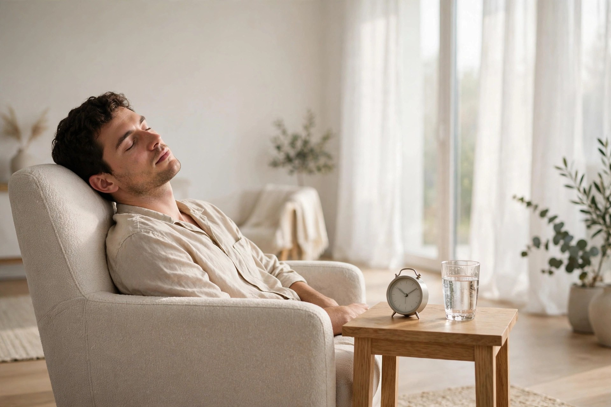

What actually happens in a 10-minute doze: the power-nap science, explained plainly

Health note: this article summarises general information from public sources (the U.S. Centers for Disease Control and Prevention's NIOSH training materials and the Sleep Foundation). It is not medical advice. Persistent daytime sleepiness, loud snoring with breathing pauses, or falling asleep while driving are reasons to stop reading humorous websites and talk to a clinician. Never drive while drowsy.
Every other guide on this site treats the doze as a social problem: how to hide it, time it, or recover from it. This one treats it as a biological event, because the ten-minute doze is the rare nap with genuine science behind it — and the science explains both why a short doze can feel like a system reboot and why a slightly longer one can leave a person feeling like they have been reassembled incorrectly.
The short answer: light sleep, fast reset
A power nap, in the Sleep Foundation's plain definition, is a planned short sleep taken to relieve tiredness and restore alertness. The whole trick is in the timing: a nap that ends while sleep is still in its early, lighter stages minimises sleep inertia — the dazed, sluggish feeling that follows waking from deeper sleep. The research summary there puts refreshing power naps in a 10-to-30-minute band, with naps under 20 minutes improving alertness and functioning right away, with little or no grogginess. The CDC's NIOSH guidance for workers lands in the same place from the other direction: for someone on a daytime schedule, a brief nap under 20 minutes is the recommendation, and it can lift alertness for a couple of hours afterwards without disrupting that night's sleep.
Ten minutes sits at the efficient end of that band. In a widely cited Flinders University comparison of 5, 10, 20, and 30-minute sleeps, the greatest immediate improvement in alertness and cognitive performance came after the 10-minute condition. The 20 and 30-minute sleepers, by contrast, showed sleep inertia right after waking, with their alertness gains arriving more than half an hour later. Ten minutes, in other words, is not a compromise portion of a “real” nap. For immediate usefulness, it was the winner.
Minute by minute in a 10-minute doze
Sleep is not a switch; it is a staircase, and a ten-minute doze only visits the top steps. The CDC materials describe how sleep deepens the longer it lasts, reaching its deepest, slow-wave level in about an hour — which is precisely the territory a short doze never enters. Here is the staircase's top landing, in plain terms:
Minutes 0–2: the departure lounge. Eyes closed, breathing slows, the talk in the room fades from words into weather. A person in this stage can be woken by almost anything and will often insist they were never asleep. The CDC notes telltale signs that light sleep did occur: fragmented visual images, a sudden muscle contraction — the famous whole-body twitch — or a sensation of starting to fall.
Minutes 2–7: light sleep proper. The brain is now genuinely asleep but shallowly. Body temperature and heart rate ease down. This shallow stage is where the reset happens: brief, light sleep is what the short-nap guidance credits for the alertness lift, because the sleeper never descends into the deep stage that makes waking feel like being dragged out of a lake.
Minutes 7–10: the sweet spot's edge. Sleep continues to deepen gradually within its light range. The alarm's job in the next section is to end the visit here — comfortably asleep, fully recoverable, nowhere near the slow-wave depths that the CDC places around the hour mark.
Minute 10: the exit. Waking from light sleep is quick and comparatively clean. Any fog that does appear after a short nap is, in the CDC's framing, the mild end of sleep inertia, which clears far faster than the grogginess that follows waking from deep sleep — a process that can take 15 to 30 minutes even in favourable cases. One honest caveat from the same guidance: a severely sleep-deprived brain descends faster, so even a short doze can end with longer-lasting inertia. The ten-minute miracle assumes ordinary tiredness, not a week of wrecked nights.
Nap lengths compared and verified
The table below cross-checks the two main sources used for this article — the CDC NIOSH nap-duration guidance and the Sleep Foundation's power-nap summary. Where they agree, a reader can plan around it; where only one source speaks, the table says so. This is the spec-verification habit applied to naps: no number appears here on the strength of a single blog's enthusiasm.
| Nap length | What the sources say | Practical verdict |
|---|---|---|
| About 10 minutes | Inside the Sleep Foundation's refreshing 10–30 minute band; the Flinders comparison summarised on the power-nap reference page found the strongest immediate alertness gain at 10 minutes | The seated-doze champion: fast in, fast out, minimal fog |
| Under 20 minutes | CDC NIOSH recommends a brief nap under 20 minutes for daytime schedules; alertness can rise for a couple of hours, with less grogginess and no disruption to night sleep | The safe general-purpose ceiling for an opportunistic doze |
| 20–30 minutes | Still within the Sleep Foundation's power-nap band, but the Flinders summary notes inertia immediately after 20 and 30-minute sleeps, with benefits delayed past 30 minutes | Fine with a buffer before anything demanding; risky as a stealth move |
| Around 60 minutes | CDC guidance places the deepest, slow-wave sleep at about an hour; waking there can considerably worsen functioning through sleep inertia | The trap zone for an unplanned doze — set an alarm or skip it |
| Around 90 minutes | Both sources describe roughly 90 minutes as a full sleep cycle, ending back in lighter sleep, so grogginess may be briefer | A deliberate, in-bed recovery nap — never a seated, in-public strategy |
The seated 10-minute doze procedure
For the rare, legitimate window — a long intermission, a parked car in a safe place (engine off, never while driving), a quiet corner during a break — the procedure borrows its setup from the Sleep Foundation's practical advice, adapted for a chair instead of a bed:
- Pick the window by the clock, not by desperation. Afternoon is the body's cooperative shift: public guidance notes a secondary wave of sleep pressure around 2 to 4 p.m., and early-to-mid-afternoon naps are the ones described as unlikely to disturb nighttime sleep. Late-evening dozes borrow from the night's sleep and charge interest.
- Set the alarm before the eyes close. Fifteen minutes of allowed time for a ten-minute doze, on a vibrating phone in a pocket. The CDC guidance is explicit about alarm discipline — set it for the short window, every time. An unalarmed “ten minutes” is how hour-long slow-wave accidents happen.
- Cool, dark, quiet — chair edition. The bedroom advice (cool room, silenced devices, darkness) translates as: shade or an eye-covering scarf, phone fully silenced, the seat away from direct warm sunlight, which is a lullaby and a spotlight at once.
- Sit supported, not slumped. The nap-workplace guidance behind the CDC materials notes that support for the head and limbs prevents the jolting arousals of a head-drop — and in public, the head-drop is both the least comfortable and the most visible part of dozing. A wall, a high seat back, or a jacket-pillow is equipment, not indulgence.
- Wake, then audit before moving. Alarm off, eyes open, sit still for a full minute. Bright light helps clear residual grogginess — the Sleep Foundation suggests sunshine or bright light, plus a splash of water on the face. Only stand up and rejoin the event once the room is sharp again.
- Check the result honestly. Refreshed and clear within a few minutes: the doze did its documented job. Groggy well past the quarter-hour, repeatedly, despite short naps: that is information, not a technique failure — see the next section.
What success looks like: ten quiet minutes, one alarm, a clear-headed return — and no story for anyone to tell about it afterwards.
When a doze is not the answer
The science has edges, and a responsible guide draws them. A ten-minute doze resets alertness; it does not repay a sleep debt, treat a sleep disorder, or make a drowsy driver safe. The term itself gives the game away — the “power nap” label is credited to Cornell social psychologist James Maas, a researcher of adequate sleep, not a magician of inadequate sleep. If daytime sleepiness is a daily event rather than an occasional ambush — if a person falls asleep in every quiet room, every warm car, every meeting — the correct next step is a conversation with a clinician about sleep, not a better seating strategy. And the footer of this entire site carries its one completely serious line for a reason: however well the science works, nobody should ever drive while drowsy. Pull over properly, or do not set out. The recital, the conference, and the ceremony will all still be there for a rested arrival — that, in the end, is the only nap statistic that matters.